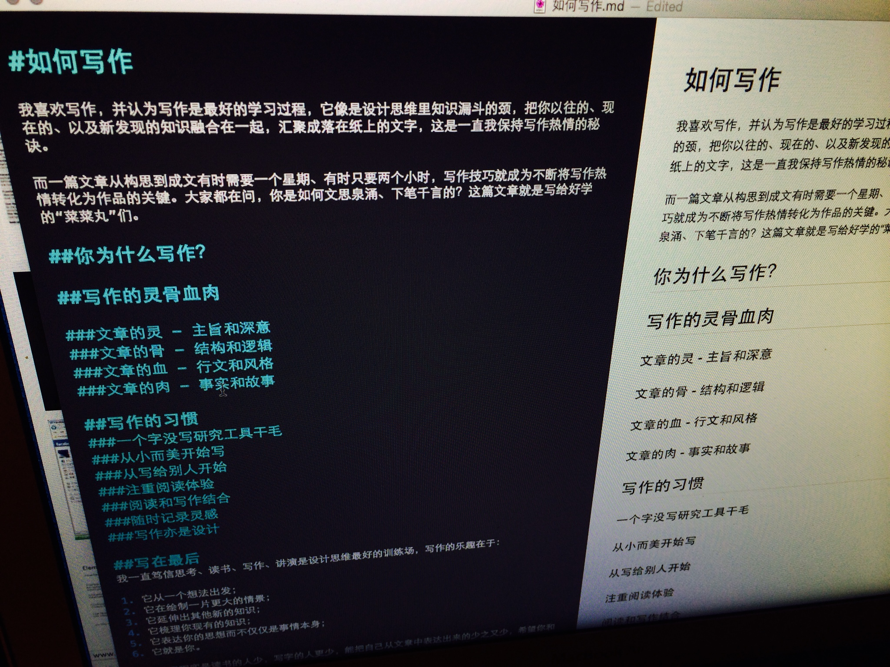
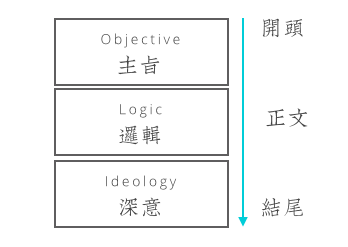
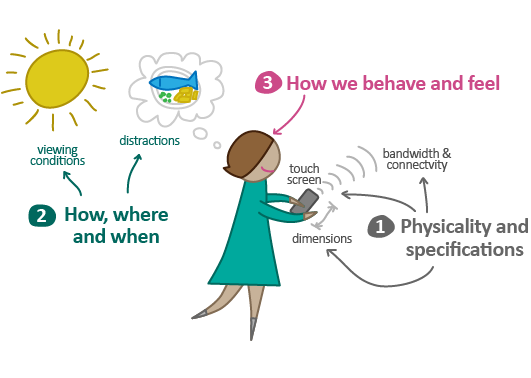
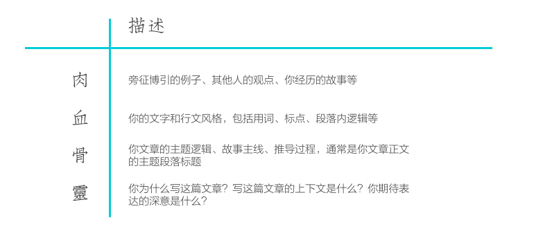
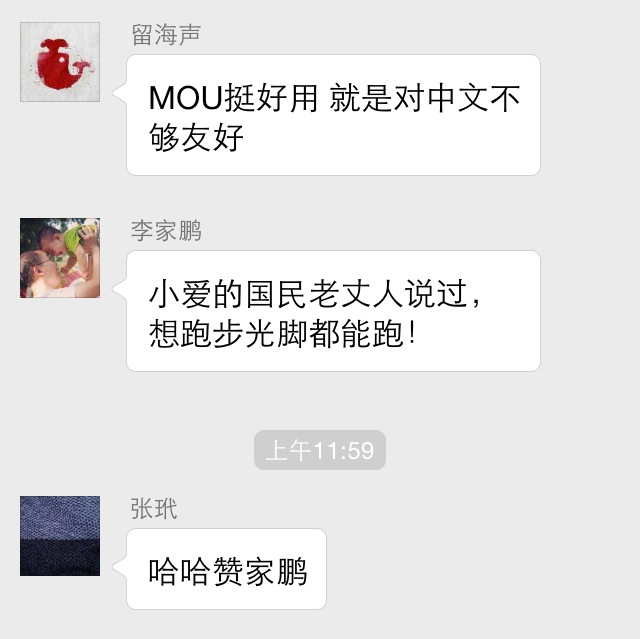
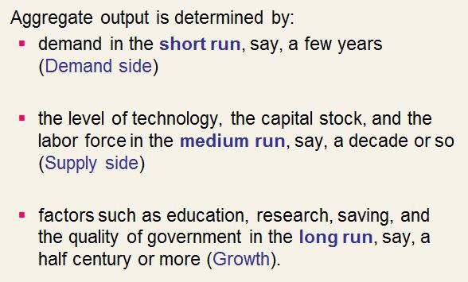

我喜欢写作，并认为写作是最好的学习过程，它像是设计思维里知识漏斗的颈，把你以往的、现在的、以及新发现的知识融合在一起，汇聚成落在纸上的文字，这是一直我保持写作热情的秘诀。
而一篇文章从构思到成文有时需要一个星期、有时只要两个小时，写作技巧就成为不断将写作热情转化为作品的关键。大家都在问，你是如何文思泉涌、下笔千言的？这篇文章就是写给好学的“菜菜丸”们。
为什么写作？
小的时候喜欢作文，很早就懂得用画面感和零碎的触及（Touchpoints）来取悦读者，跳跃的场景和细碎的文字像雅致的调情，这就是最早写作的驱动，我就是个“文字少年犯”。
2010年我在HW做咨询，因为信息安全我没有办法访问大多数网站，只有一个在线协作工具可以突破局域网，于是为了打发咨询工作漫长的时间，我把咨询过程中的思考汇聚成了文字，这也是这个博客一直坚持下来的基础，20多篇《敏捷咨询日记》成为我设计思维形成的最好见证，而那时候我写作的目的是为了总结自己。
后来做设计业务，为了占据诸如设计思维、敏捷设计这样的话语权，我写了大量关于这些方面的文章，直到现在这些文章依然为我们带来新的、并且喜欢我们价值观的设计师，这时候写作的目的就变成的识别和招募同伴以及设计品牌建设。
再后来，自己的设计理念也从实践上升到思维，接下来的写作又重新回到了记录自己思维的变化，这时候的写作就变得更加深刻和高效，目的也变成了记录和传播自己的设计观。
因此，找到这样的“驱动”就成为你写作的第一步，那么什么是可能的“写作驱动”？下面这些是我的建议：
- 帮助别人：就像这篇文章一样，这篇的驱动点是大家的一个问题，就像知乎的产品逻辑，面对有意思的问题，人们会更有动力将自己的经验和想法记录下来，“命题作文”的方式可能是最直接有效的；
- 自我学习：我们的思维能力被碎片化无情侵蚀，需要极为专注时间的写作本身是锻炼思维能力的极佳工具；
- 设计师品牌：世界最优秀的设计师都在通过自己的文字传播自己的思想，而不仅仅简单只是一件作品，横空出世的作品可遇不可求，但文字确是长久和持续产出的，文字最后将转化为设计师品牌；
- 职业发展：眼界的广度、思考的深度、寻找关系的洞察力、娓娓道来不卑不亢的表达力都是职业设计师成长的目标，而这些都可以通过写作来锻炼，更不要说，有博客比没博客的设计师薪水多出一截的现实。
写作的灵骨血肉
写作就是设计，就像JJG的用户体验元素模型一样，写作同样有类似的构造元素，它们如同灵骨血肉一般构建起一篇完整而丰富的文章，它们分别是：
- 文章的灵 - 主旨和深意
- 文章的骨 - 结构和逻辑
- 文章的血 - 行文和风格
- 文章的肉 - 事实和故事
就像构建一个完整的用户体验，我们需要在策略、内容、架构、交互、视觉不同层次上逐层演进，文章也是类似：
文章的灵 - 主旨和深意
主旨是你为什么要写这篇文章，而深意是你文章表达的更深层次东西，通常，这就是你文章的开头和结尾，例如在这篇文章中，我的主旨是：如何文思泉涌又下笔千言？这就像设计挑战（Design Challenge）牵动整个设计一样，牵动整个文章的行文；而我的深意是：写作的乐趣是丰富而深刻的，作为设计师的你应该写下你对设计的理解，你才是纯粹的。
因此通常的情况下，我会先写出一篇文章的开头和结尾，它们分别代表：
- 我为什么写这篇文章？驱动写作的原因和背景是什么？
- 我最想表达的是什么？超越文字的期待、理解、和归纳。
文章的骨 - 结构和逻辑
文章的骨是贯穿整个文章一气呵成的重要脉络，文章逻辑严谨的重要判断是“是否能够通过开头和结尾以及各级别标题就能大致了解文章内容”。我经常使用Markdown语言进行写作（如下图），这种结构化的语言强迫你通过不同级别的内容构建文章，就像使用语意化的HTML代码编写网页一样。

这样的写作习惯无论是读者精读或是粗读，都能够很好地获得你文章的主旨、逻辑、和最后的深意。

这样的思维来自于多年的汇报经验，一个面向高层的汇报通常包括：
- 汇报的背景和目标介绍；
- 得到结论的过程和逻辑；
- 汇报的总结和进一步计划。
汇报如此，行为也是如此。
文章的血 - 行文和风格
为了让文章更加具有可读性，行文和风格也十分重要，它就像是与读者在纸上交互的用户体验，好的文字风格让读者专注和耐心。行文和风格方面，我推荐几个经验：
短而轻快的节奏
越来越没有耐心的人们已经逐渐丧失阅读长句的能力，哪怕意义深广、逻辑精妙，尽可能使用短句让文章更可读。可能是阅读古文的缘故，越是精炼的语言越让读者沉浸。我从未读过郭敬明的小说，直觉告诉我如此受年轻人喜爱的文章文风一定是短而轻快，果然：
外面还在下雨，从昨天晚上一直下到现在，缠绵悱恻得没有一点夏季暴雨的味道。...看，我这人挺倒霉的，任何人包括神仙在内都不怎么给我面子，顺我心意。 - 《七天里的左右手》
而轻快的节奏容易使得句子散乱，读完之后不得要领，因此语句的结构很重要。
语句的结构
看下面这个段落：
当我们看到一把锤子的时候，如果问你体验好不好，你必然是回答不出来的，原因是你不知道是谁在使用它，也不知道他使用的目的是什么。所以有了用户和目标才能称之为用户体验。定义问题的重要的两步是把用户以及目标确定下来。
一个简短的句子，便包含了三个元素，它们是：
- 论据A：对于一个物体缺少上下文便无法评价体验；
- 论点B1：有了上下文（用户和目标）才能成为体验；
- 论点B2：定义问题的重要两步是确定用户和目标。
这个段落还可以改进的地方是，论据和两个论点之间的关联关系没有那么强烈，特别是论点B1和论点B2之间，突然出现“定义问题”这个概念让读者有些突兀，问题出在“转折用词（当、因为、所以、于是等）”的使用，更好的使用转折词可以使得语句结构更通顺，例如：
当问一把锤子的体验是不是好，你必然难以回答，因为你不知道谁在用、为什么用。这便是用户体验的两大要素：用户和目标；而定义一个完整用户体验的重要两步，正是确定用户和目标。
在修改了一下转折词的时候用，语句的阅读体验变得更加简洁。
每段不要超过5行
过长的段落让读者喘不过气来，至于是几行，每位作者有自己的习惯，我通常给自己的标准是通用网页阅读宽度下不超过5行。
正确使用标点符号
标点符号是具备辅助阅读的功能的。例如左侧第一个句子，在这里果断地使用了一个句号，说明这是本段的要义所在。回到上面那个例子也可以看出来，段落逻辑是A-B1-B2的模式，标点也是句号-分号-句号——标点从另一个方面辅助阅读。
另一个好用的标点是列表（Bulletpoints），这是我经常使用的表达手段，用符号的方式表现一类观点并进行排列，读者读起来会更加轻松。
文章的肉 - 事实和故事
当你的文章“意味深长”、“逻辑精妙”、“行文流畅”，一定量的事实和故事，为你的文章增添色彩，让读者获得更多的知识，这里的事实和故事，可以包含以下几种类型：
- 其他人的类似观点；
- 引用他人的话；
- 一个别人或者自己的故事；
- 一份数据；
文章中的观点或数据引用和故事转述使你的文章更加丰满，这对你的阅读量也提出了很大的挑战，这也是有的文章耗时长（大量的旁征博引）有的文章耗时短的原因。还是使用之前那个段落的例子，一个窍门是，图片搜索一下关键词如"User Experience", "User", "Context"就可以搜索出许多图，这些图往往是某些相关文章的配图，你可以很快地寻找到一些类似观点，作为你文章的补充，例如：
 再按图索骥到相关文章，在这篇《Designing for Mobile, Part 1: Information Architecture》中你就这可以找到一些很好的观点，补充你的观点，例如在移动体验设计中理解用户和其所在的情景更加重要，因为：
We often use them while “doing” something else. This means we may use the device under difficult viewing conditions, or among a variety of distractions.
以上便是写作四层次的分别解释，让我们来总结一下：

接下来，我们来谈谈写作的好习惯：
写作的习惯
最后再谈好的工具
和设计一样，工具永远都应该放在最后，对此，我们是这样看待这个问题的：

因此在考虑博客系统是不是好，该不该有个独立域名什么的之前，先写20篇再考虑工具的问题。当然我最推荐的写作工具依然是Markdown语言。
从小而美开始写
所谓“小而美”是能够包含之前所提到的“灵骨血肉”四个元素的完整文章，而无论长短。
从写给别人开始
就像小时候语文课里的命题作文，尝试去知乎回答问题，或许是个迅速提升写作能力的好方法，例如为我写一篇“小而美”的文章《你心中的优秀设计是怎样的？》。
注重阅读体验
就像之前谈到的，正确使用符号、段落、不使用长句子和拗口的话、以及精心设计的配图都是提升阅读体验的方式，把你的文章当成一个设计一样去完成，谁会喜欢你涂鸦一样的流水账呢？
阅读和写作结合
我相信好的写作能力来自于广泛的阅读和思考，对文字的熟悉度越高（而不是图片或视频，更不是所谓干货），产出文字时候的效率就越高。
随时记录灵感
记录写作灵感是一个非常好的习惯，在日常生活中你可能遇到许多有趣的现象，或者突然想到的逻辑，例如最近思考设计管理中“以技能为基础”、“以服务为基础”、和“以人为基础”的区别，又突然看到新凯恩斯主义中关于“产出由什么决定”的观点：

联想到了团队建设的短期行为是针对市场需要服务（需求）、中期行为是建立人才能力体系（供给）、长期行为是建立从文化、设计观、实践、方法论等全方位的增长模型（增长）。这样的思考点，很容易被展开成为一篇文章《从宏观经济学理论看设计业务规划》，遇到这样的情况，我都会建立一篇以此命名的文档，并写下简单几句，作为灵感的记录。
写作亦是设计
细心的读者应该能够发现，无论是从概念到文字表达的循序渐进，还是晓之以理动之以情似的分析和直觉并重，我所说的写作无时无刻不体现着设计的思维，因此，作为设计师的你，把写作当成一次设计用心完成。
写在最后
我一直笃信思考、读书、写作、讲演是设计思维最好的训练场，写作的乐趣在于：
- 它从一个想法出发；
- 它在绘制一片更大的情景；
- 它延伸出其他新的知识；
- 它梳理你现有的知识；
- 它表达你的思想而不仅仅是事情本身；
- 它就是你。
而设计界现实是读书的人少，写字的人更少，能把自己从文章中表达出来的少之又少，希望你和我们一起写你对于设计的理解，让我看到你的文字里那个执拗而认真的纯粹灵魂。